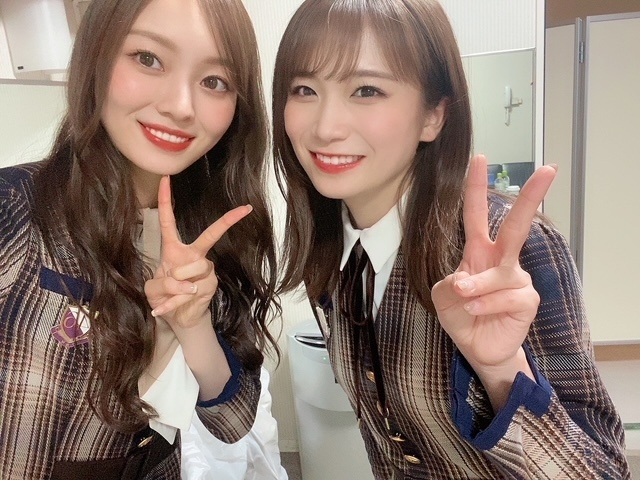
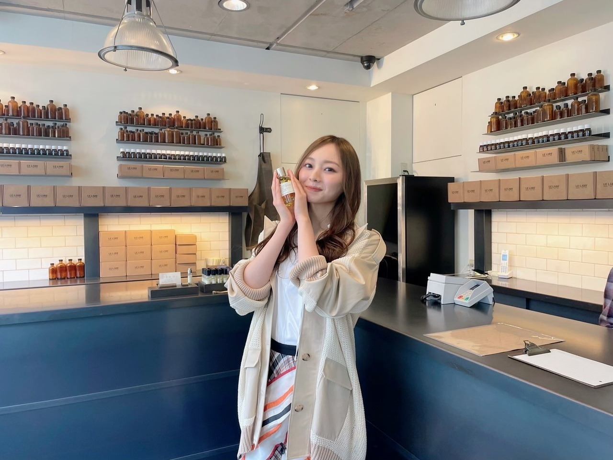
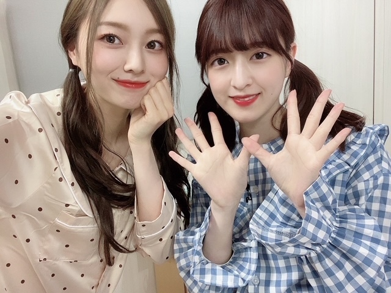

昔は デコ なんて呼ばれていた時期もありました 小さい頃ってどうしてあだ名付けたがるんでしょうか
おでこはかなり広めかと思います
レバー、ひじき、子持ちめかぶ…
最近 好んで選ぶものはどれも渋め…
ものすごくね、食の好みも
年齢と共に 変わるものですねえ
歳を重ねることの楽しさのひとつって
こういう所にもあるのかな〜と感じてます
あっちゅーまに５月ですね。
更新空いてしまいすみませぬ…
もう間もなくですね。うわ〜。
ずっと緊張してます（笑）
本当に光栄な事です。
まだあまり実感がありません。
乃木坂46の始まりの２０１２年から
少しずつ変化してきた今日まで、
みんなで繋いできた大切なグループの
大きな節目になりますね。
振り返ってみれば
ズッシリ 、 心にくる 重みのある時間でした。
何をもってなのか、色んなきっかけから
ここに辿り着いた
皆と過ごせる時間を大切に
ステージからの景色を味わいたいと思います☀︎
本当に宝だからね〜。
あの録画できない 自分の目線からの眺めは
一度きりなのでね。
記憶にしっかり残せたら。
乃木坂らしく、まあなんとも見事な
傘マークが並ぶ今週の天気予報。
思わず笑ってしまいました、でも
降ったらそれはそれでまた良さがあるし、
晴れたらそれはまた奇跡的なことだし。
意外と、嫌いじゃないんです(^^)
あ、でもステージが滑るのは困るなあ。
会場に来られる方は
しっかり対策していらしてくださいね。
傘、合羽、鞄を守るビニールとか、
羽織る上着とか。
どうか、風邪だけは引かないようにね。
配信でも見られます。
各々の楽しみ方で お家でも楽しんでね！
ステージに立って 今、感じる感情を
すごく大切にしたいですね、
楽しみにしてます！頑張る！
YouTubeで
ゲーム生配信もしました。
楽しかった〜。
わたし、ボロ負けでした。く〜。
マリオパーティとか、強いです。
あとぷよぷよも自信ある。
またなにか出来たらいいな！
YouTube！楽しいことしたい(^^)
あ、それと
１０thバスラ記念として
個人PVのフルサイズが 期間限定で
乃木坂配信中YouTubeに上がってます。
わたしは２７枚目シングルに収録されていた
「梅色」を。
お気に入りの曲なので ぜひ〜！

５期生のお見立て会にて、
真夏さんと 司会を務めさせていただきました！
お見立て会、５期生の皆にとって
一生残る大切なステージなので
終始 背筋が伸びる思いでした。
１１人の 可愛い後輩たちができました！
みんな本当に可愛かった〜。
自己紹介も 個性豊かで楽しませてもらったし、
裏のモニターに釘付けになって見ていました。
本番前まで 緊張してた皆とは打って変わって
ステージでは最強にかっこよかったですね。
皆様これから
５期生ちゃん達も よろしくお願いします。
のぎ動画 で見られますので、
こちらもぜひ！

発売中の雑誌「fine」に
掲載して頂いてます。
"アクティブガールのデート目線"
ということで
理想のデートを提案させて頂き、
香水作りデートをシチュエーションに
撮影してきました〜
ぜひお手に取ってみてください！
大好きなお店、
LELABOさんにて撮影したのですが
いい香りすぎて癒されまくりでした香りって本当に大事
そんな感じかなあ…
また、更新します。
お洋服見に行って
もうすっかり夏物も置いてたり。
というかもう 夏なの…？
カラーものでたくさんあそびたいし
なによりノースリーブもたくさん着たいから
身体作りがんばる…！
年々シンプル思考になりつつあるから
Tシャツ デニムばかりになりそうな気もする(^^)
それはそれでまあ、良きかな

みんてぃーでさよならまたね
みんな元気でいてね
Original：https://www.nogizaka46.com/s/n46/diary/detail/100255?ima=4933&cd=MEMBER